Rows: 115,502
Columns: 13
$ timestamp <dbl> 1691784874, 1691784882, 1691784892, 1691784903, 16917849…
$ utc <dttm> 2023-08-11 20:14:34, 2023-08-11 20:14:42, 2023-08-11 20…
$ callsign <chr> "DLH790", "DLH790", "DLH790", "DLH790", "DLH790", "DLH79…
$ lat <dbl> 48.35789, 48.35788, 48.35789, 48.35790, 48.35798, 48.358…
$ lon <dbl> 11.79256, 11.79278, 11.79301, 11.79330, 11.79355, 11.793…
$ altitude <dbl> 0, 0, 0, 0, 0, 0, 0, 0, 0, 0, 0, 0, 0, 0, 0, 0, 0, 0, 0,…
$ speed <dbl> 3, 4, 4, 4, 4, 4, 0, 0, 4, 5, 6, 6, 12, 13, 14, 15, 15, …
$ direction <dbl> 261, 255, 244, 225, 208, 182, 174, 174, 174, 174, 174, 1…
$ file_name <chr> "LH790_318ce2d1.csv", "LH790_318ce2d1.csv", "LH790_318ce…
$ weekday <ord> Fri, Fri, Fri, Fri, Fri, Fri, Fri, Fri, Fri, Fri, Fri, F…
$ weekday_start <ord> Fri, Fri, Fri, Fri, Fri, Fri, Fri, Fri, Fri, Fri, Fri, F…
$ date_start <date> 2023-08-11, 2023-08-11, 2023-08-11, 2023-08-11, 2023-08…
$ label <chr> "LH790 2023-08-11", "LH790 2023-08-11", "LH790 2023-08-1…Introduction
Hello, it’s been a while since my last post! You remember the bears in Canada? 🐻
However, both this post and the last one share a common theme: they’re about my upcoming travels.
I’m eagerly anticipating my trip to Singapore. As a fan of the city, I want to start enjoying it right from the moment of my arrival, which means catching a glimpse of the skyline as the plane approaches Changi Airport.
Given the airport is located to the east of the city, a south-west approach typically offers the most scenic vistas. The question is: What is the likelihood that I will see this view, sitting on the left side of the plane?

Thankfully, data is here to help! I invite you to join me on this analytical journey. ✈️
Data
My flight to Singapore is with Lufthansa, departing from Munich. I’ll be on flight LH790, a service offered six times per week using the very fuel-efficient A350.
Aviation is a passion of mine, so I have a membership at www.flightradar24.com. 🤓 This allows the download of the flight path for each flight over the past 365 days. I downloaded the data for the last 80 days’ flights of LH790. Let’s first look at the variables and the date range.
[1] "2023-08-11" "2023-08-13" "2023-08-14" "2023-08-15" "2023-08-16"
[6] "2023-08-17" "2023-08-18" "2023-08-20" "2023-08-21" "2023-08-22"
[11] "2023-08-23" "2023-08-24" "2023-08-25" "2023-08-27" "2023-08-28"
[16] "2023-08-29" "2023-08-30" "2023-08-31" "2023-09-01" "2023-09-03"
[21] "2023-09-04" "2023-09-06" "2023-09-07" "2023-09-08" "2023-09-10"
[26] "2023-09-11" "2023-09-13" "2023-09-14" "2023-09-15" "2023-09-17"
[31] "2023-09-18" "2023-09-20" "2023-09-21" "2023-09-22" "2023-09-24"
[36] "2023-09-25" "2023-09-27" "2023-09-28" "2023-09-29" "2023-10-01"
[41] "2023-10-02" "2023-10-04" "2023-10-05" "2023-10-06" "2023-10-08"
[46] "2023-10-09" "2023-10-11" "2023-10-12" "2023-10-13" "2023-10-15"
[51] "2023-10-16" "2023-10-18" "2023-10-19" "2023-10-22" "2023-10-23"
[56] "2023-10-25" "2023-10-26" "2023-10-27" "2023-10-29" "2023-10-30"
[61] "2023-10-31" "2023-11-01" "2023-11-02" "2023-11-03" "2023-11-05"
[66] "2023-11-06" "2023-11-07" "2023-11-08" "2023-11-09" "2023-11-10"
[71] "2023-11-12" "2023-11-13" "2023-11-14" "2023-11-15" "2023-11-16"
[76] "2023-11-17" "2023-11-19" "2023-11-20" "2023-11-21" "2023-11-22"The data is already quite impressive. From just 80 flights, I’ve gathered 115,502 data points, averaging about 1,444 per flight. So, what do we have?
The timestamp and UTC provide the time information. Latitude (Lat) and Longitude (Lon) show the position of the plane at a certain timestamp/UTC. There’s also data on speed (in knots), altitude (in feet), and direction (heading) for that moment.
I’ve already derived some additional variables that might be useful or interesting, such as the weekday, the weekday of departure from Munich (since the date line is crossed during the flight), and a unique label for each flight.
The following analysis is based on the LH790 flights from 2023-08-11 to 2023-11-22. That is a difference of 103 days. But since the connection is not offered every day, we only look into the last 80 flights in this date range.
Now its time to jump into the data!
Punctuality of departure
Let’s begin with a quick review of the departure punctuality. The flight is scheduled to depart at 10 PM from Munich. I calculated the difference between this time and the actual take-off time, which is determined by the first waypoint (time) exceeding 1000 feet.
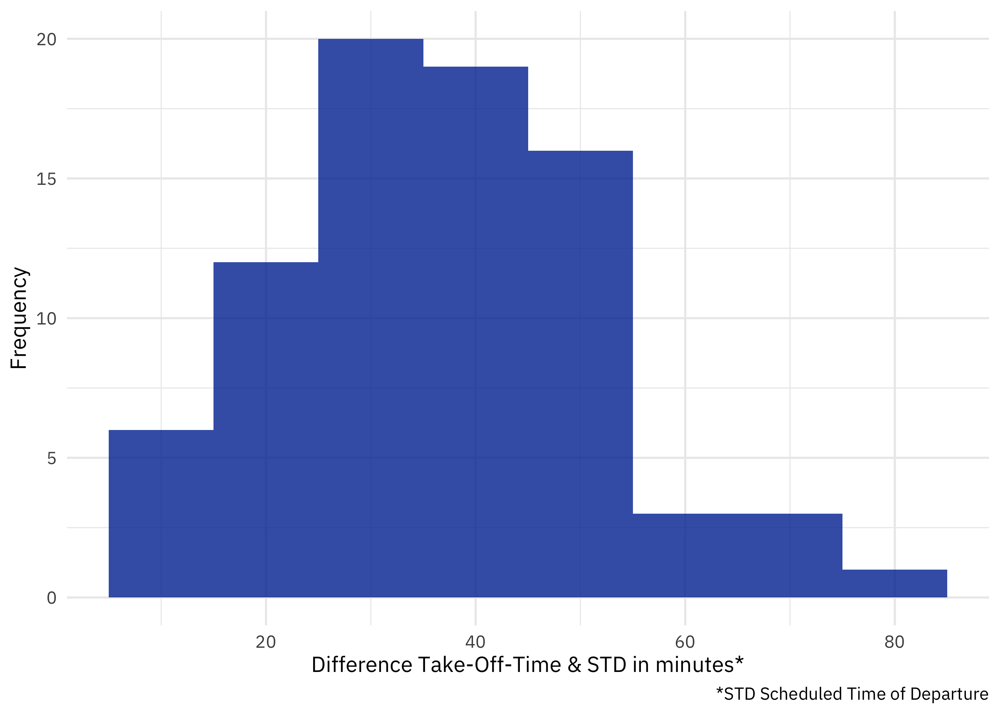
Fortunately, the histogram indicates that only a few flights have delays exceeding one hour. The average delay is approximately 36.4 minutes. This seems quite reasonable for a 12-hour flight, especially considering that the STD refers to the time when the plane is pushed back. Thus, the “delay” observed here actually encompasses the time taken for pushing back and taxiing. In conclusion, there is no need to be concerned about significant delays.
Speed & Altitude
Let’s scatter both variables, speed and altitude, from the 80 flights.
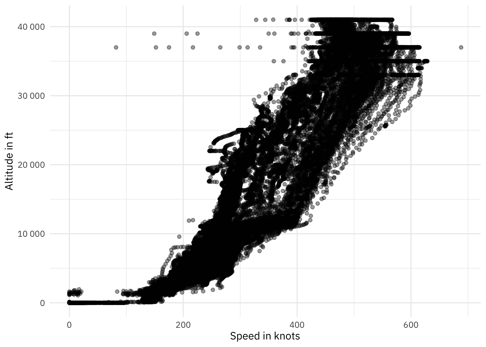
The plot of speed versus altitude is intriguing. It clearly shows takeoff and landing phases (speed > 0 at altitude = 0). It appears the plane takes off at around 150 knots, as that’s when altitude begins to increase (vice versa for landing).
There seems to be a linear relationship between speed and altitude, which is intuitive. But why does it form a funnel shape? This warrants further investigation. My theory is that there’s a different relationship (scatter) during the three flight stages:
Takeoff/Climb
Cruise
Landing/Descent
I don’t have stage information in the dataset, so I derived it, after removing some of the strange points in the scatter plot (very low speed at high altitude). See the following code.
Click here to unhide/hide the code.
all_data <- all_data %>%
filter(!(altitude > 100 & speed < 100)) %>%
filter(!(altitude > 30000 & speed < 400)) %>%
group_by(file_name) %>%
arrange(timestamp) %>%
mutate(altitude_before = lag(altitude, default = 0),
altitude_after = lead(altitude)) %>%
filter(!(altitude == 0 & altitude_before == 0 & altitude_after == 0))
all_data <- all_data %>%
group_by(label) %>%
arrange(utc, .by_group = TRUE) %>%
mutate(startzeit = utc[1],
flugdauer = difftime(utc, startzeit, units = "mins"),
flugdauer = as.numeric(flugdauer))
takeoff_threshold = 10
landing_threshold = -10
all_data <- all_data %>%
mutate(gradient = c(NA, diff(altitude) / diff(flugdauer)),
smooth_gradient = rollmean(gradient, 5, fill = NA)) %>%
mutate(phase = case_when(
smooth_gradient > takeoff_threshold ~ 'Climb',
smooth_gradient < landing_threshold ~ 'Descend',
TRUE ~ 'Cruise'
))Whats going on in the code? After cleaning up of the anomalies in the data, I focused on calculating the relative length of the flight since takeoff. To clarify, I’m considering ‘takeoff’ as the last moment when the altitude is zero and eliminating all prior data points, effectively excluding the taxiing phase (same applies for the landing).
The next step is to calculate the gradient, which involves correlating the change in altitude with the change in the relative length of the flight. The sign of this gradient indicates whether the plane is ascending or descending between two points. After this, I smooth out the gradient for a clearer analysis.
Let’s now revisit the plot, this time analyzing it by the flight phase.
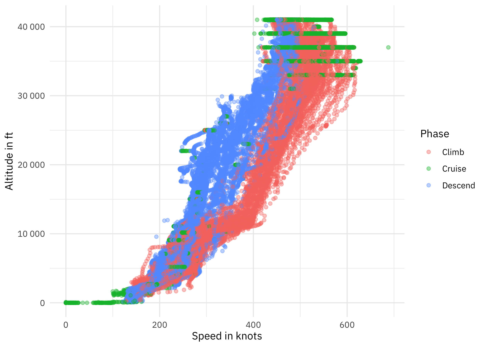
The results are fascinating! The climb phase (red) requires higher speed to gain altitude, as governed by physical laws, as it sits more towards the right side (higher speed).
What’s particularly striking is the precision with which the plane maintains altitude at different speeds during the cruise phase (green lines).
Altitude and Duration
I need to take a closer look at this aspect of maintaining stable altitude.
Therefore, I am plotting the plane’s altitude against flight time (measured in minutes).
I will present a summary encompassing all flights, and for enhanced clarity, I will also showcase randomly selected flights throughout this article (you can switch between the different views using the tabs).
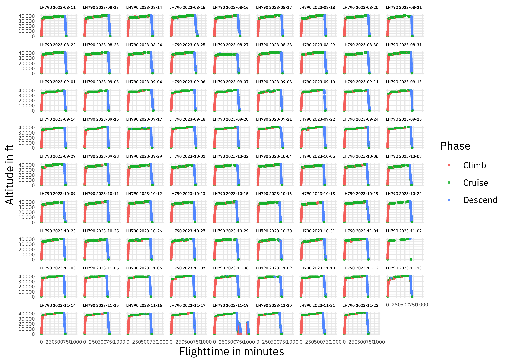
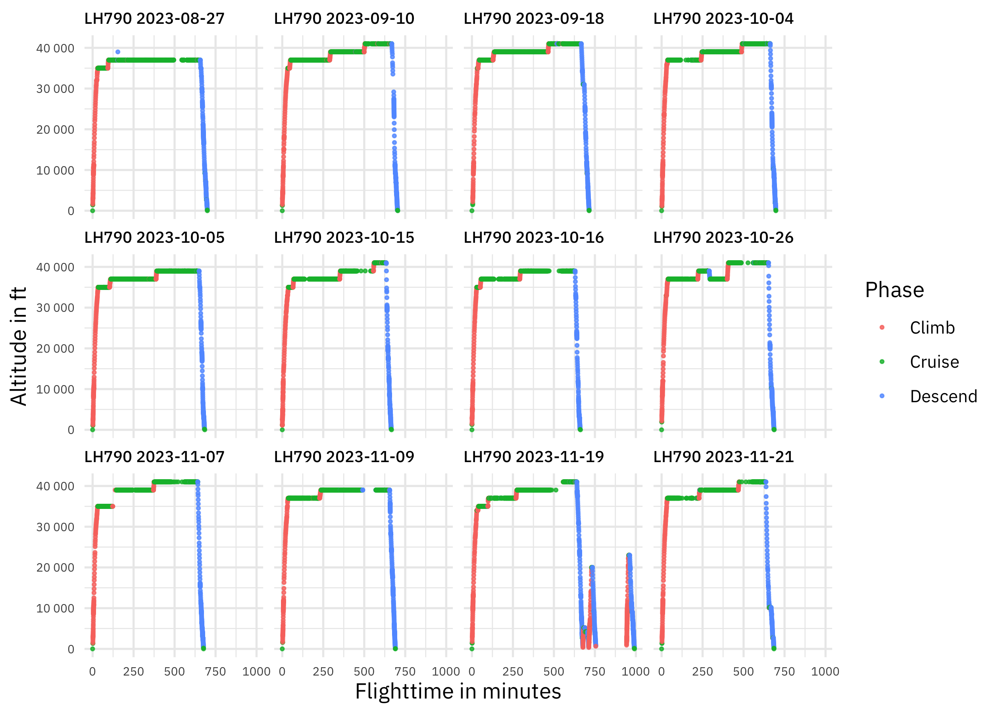
It’s amazing to see how the plane maintains a consistent altitude over an extended period of time. Yes, I’m aware there are minor deviations in altitude, or even significant ones during turbulence. The plot here is somewhat smoothed out due to the resolution of the measurement and also the range of the X- and Y-axis, but I’m still impressed.
Note
What can also be observed is that sometimes the altitude profile has gaps. This is due to the absence of data points in some instances. The reason for this is that Flightradar24 cannot track signals in certain areas of the world (e.g. ocean areas).
Upon further analysis, I noticed an anomaly on the flight dated November 19th. A quick check on Flightradar24 revealed that on that day, the plane was diverted to Kuala Lumpur after two unsuccessful landing attempts due to bad weather at the airport. I’ll exclude this flight from the rest of the analysis.
Approaching Singapore
Let’s now turn our attention to the initial question regarding the likelihood of having the best view of Singapore’s skyline, and take a closer look at the local conditions in more detail.
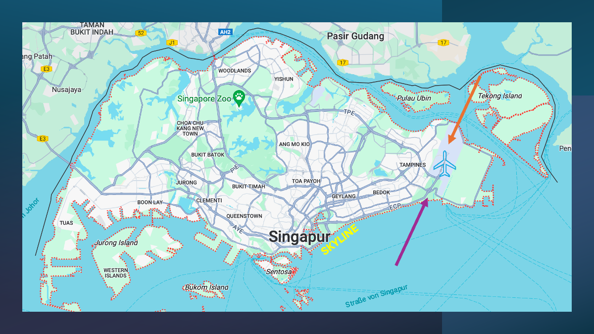
As indicated on the map and mentioned earlier, if the approach is from the southwest (shown by the purple arrow), then the left side of the plane provides a good view of the skyline. On the other hand, for a northeast approach (marked by the orange arrow), it’s recommended to sit on the right side to catch a glimpse of the city, even if it’s not the full, impressive skyline.
What needs to be done now is to determine the approach direction for each flight in order to calculate the likelihood of getting the best view. How do I do that?
From the flight path I examined the final descent phase, specifically when the plane was below 2,000 feet (~ 600 m) in altitude, because at that stage I would expect (and hope 😃) that the plane is already fully aligned with the runway! Let’s first see if this expectation holds true!
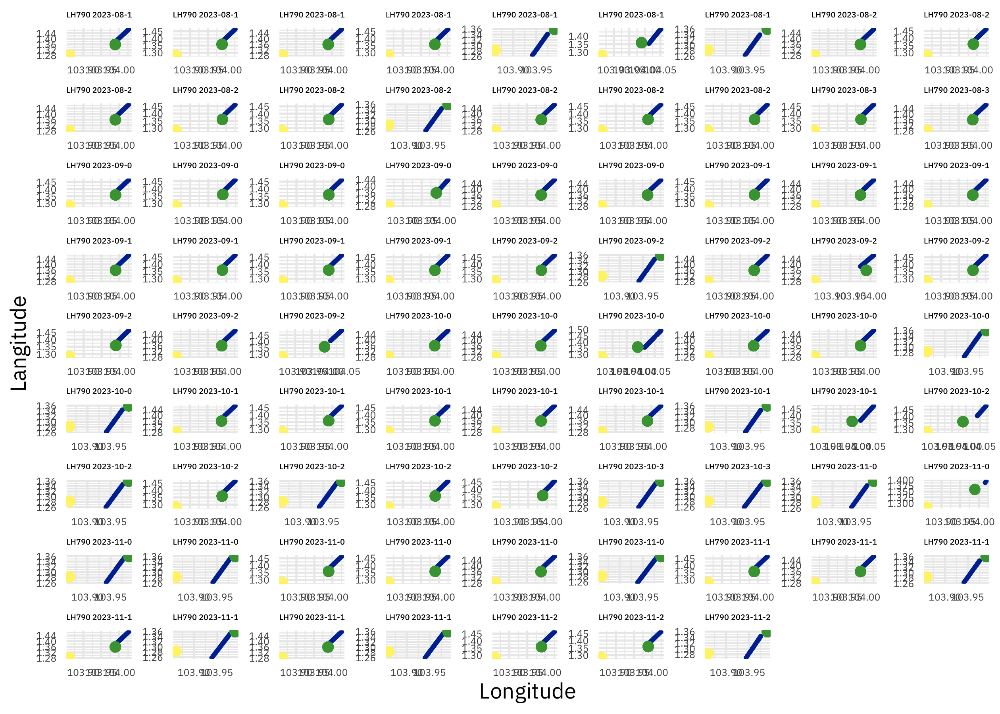
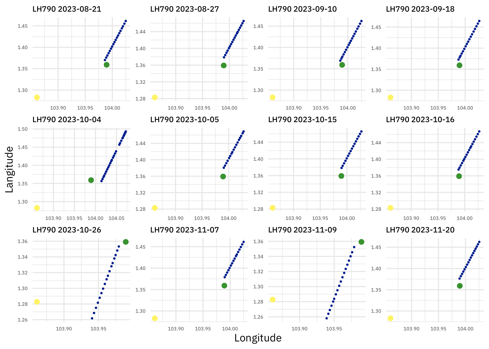
The yellow point marks the location of the renowned Marina Bay Sands, while the green dot signifies the official location of Singapore Airport. It is very evident that at an altitude of 2,000 feet, the aircraft is already perfectly aligned with the runway (blue points form a perfect line). Additionally, it is observable that there is a singular direction offering a prime view of the skyline: the approach from the southwest (like we already know).
Note
There is multiple runways at Singapore, thats why the line is shifted from day to day.
Now, all I need to do is classify each approach to easily tally them up. And here’s the concept: if the average latitude of the approach is less than the latitude of Singapore airport, then the approach is likely from the northeast. Conversely, if it’s higher, the approach is probably from the southeast. This must be adjusted to the specific airport (could be different if there are crossing runways). Let’s calculate and see what the results show.
Click here to unhide/hide the code.
flights_direction <- all_data %>%
group_by(label) %>%
filter(phase == "Descend" & altitude < 2000) %>%
group_by(label) %>%
summarize(approach_direction = if_else(mean(lat) > 1.359167,
'north-east',
'south-west'))Now, let’s proceed to verify if the “classification” is accurate by conducting a graphical inspection (this time without the Marina Bay Sands, but only the airport as a green point).
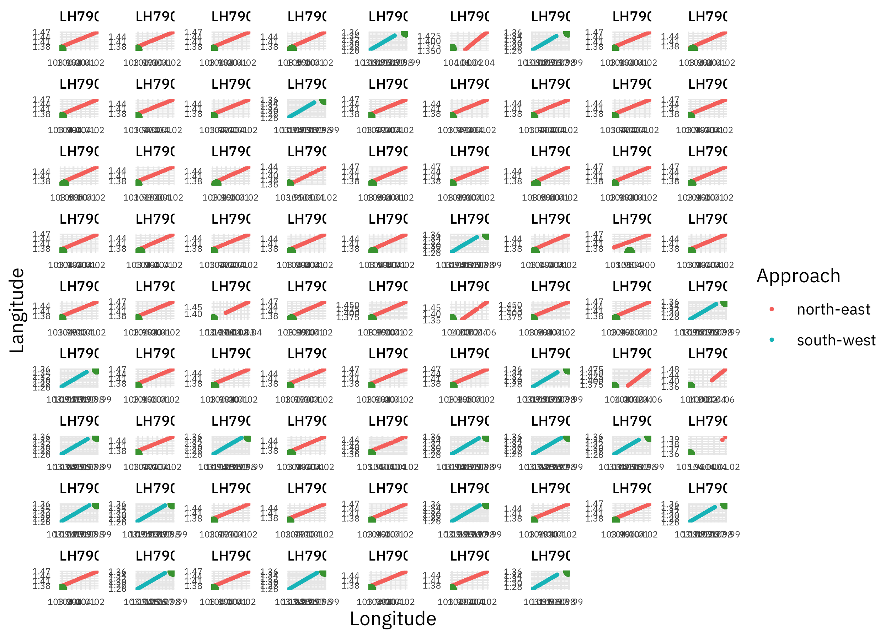
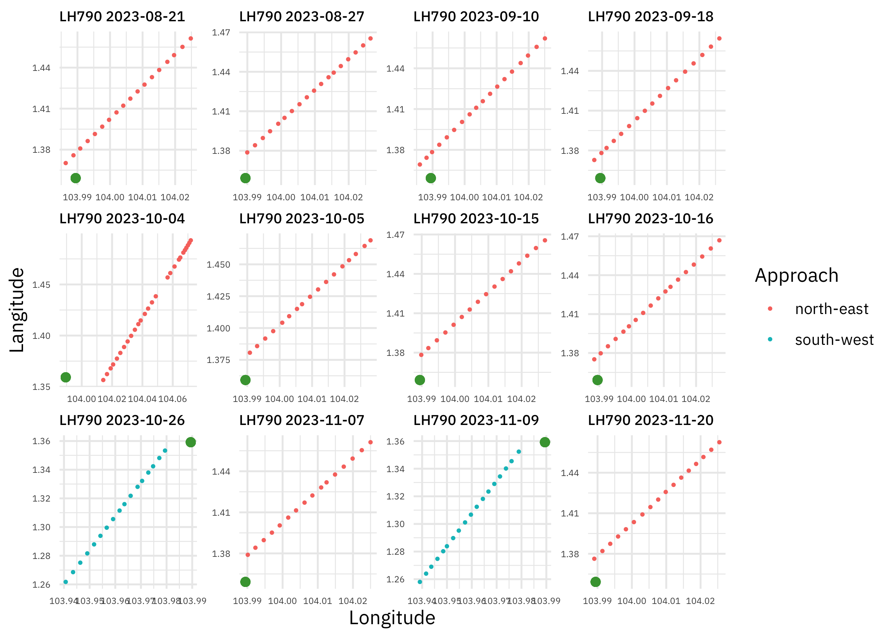
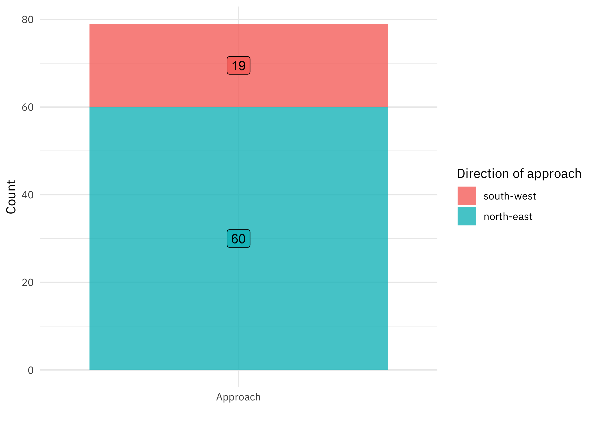
To clarify the legend: the approach always refers to the incoming direction. So, “south-west” means that the approach is being made from the southwest direction (as you can see in the plot). As mentioned earlier, the approach from the southwest offers the best view of the skyline, but it turns out, disappointingly, that only ~ 25% of the 80 flights are approached from this direction.
What a pitty 😥.
Conclusion
I thoroughly enjoyed this quick analysis again. I hope you found it enjoyable too! I learned: I don’t need to worry about delays. I’m definitely planning to sit on the left side of the plane, fingers crossed for that 25% chance. 🤞
In my next post I will remain on this flight and try to identify holding patterns during the descent towards Singapore’s Changi airport. Stay tuned!